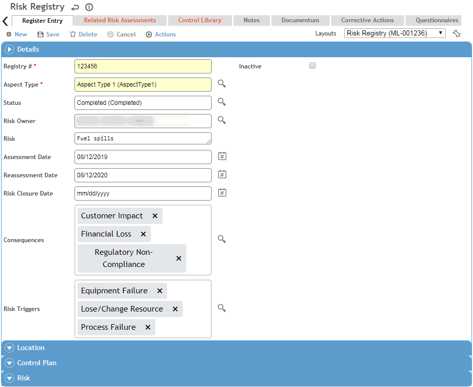

In the Environmental menu, click Risk Registry.
Use the Site Selector (at the top of the Environmental menu) to view just the records related to a particular GDDLOFB node.
Click a link to view details of an existing opportunity, or click New and choose Opportunity to register a new risk.

Enter a Registry # according to your internal reference system.
Select the Aspect Type that encompasses the opportunity, such as Environmental or Safety; the layout may change to reflect options specific to your choice.
Enter a description of the unmitigated risk.
Select the Risk Owner, Status and Type.
Optionally identify any stakeholders that have been recorded in the Stakeholder look-up table.
Only values in the corresponding look-up tables that are identified as applicable to Risk Registry will be available in the above picklists.
Click Save.
On the Related Risk Assessments tab, record any other risk assessments that affect this risk.
On the Control Library tab, document the controls in place to prevent this risk.